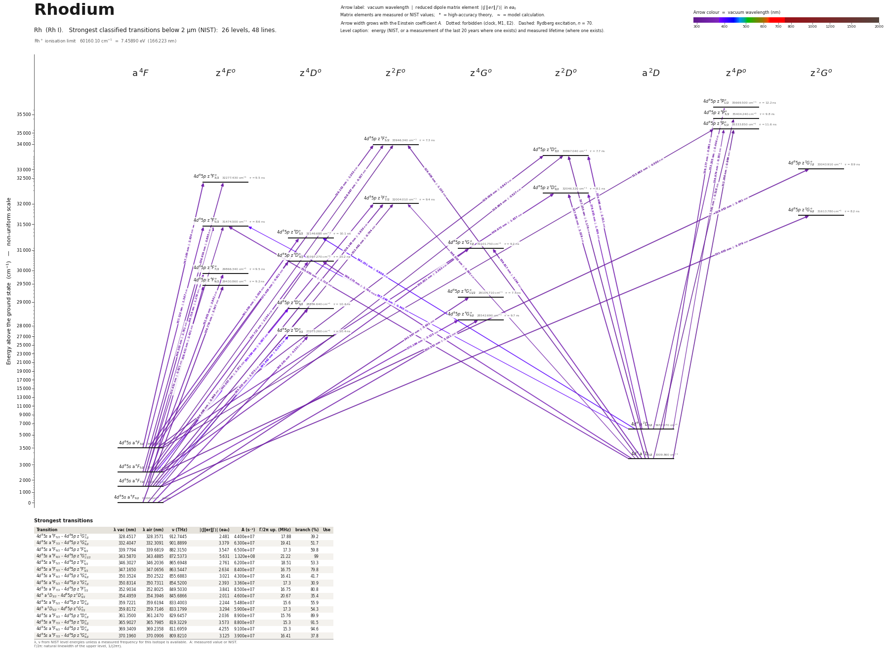

Rhodium energy level diagram
Energy levels and transitions of neutral rhodium (Rh I): the 48 strongest classified lines below 2 µm from the NIST Atomic Spectra Database and the 26 levels they connect, each line with its vacuum wavelength, frequency and, for 48 of them, the reduced dipole matrix element derived from the NIST transition rate. Measured lifetimes, transition rates, hyperfine constants and isotope shifts from the literature are included, each with its citation.
Hover a line or a level to isolate it, click to keep it selected. Scroll to zoom, drag to move.

Download: diagram (PDF) diagram (SVG) transitions (CSV) levels (CSV) source code

Strongest transitions of rhodium
| Transition | λ vac (nm) | λ air (nm) | ν (THz) | |⟨J‖er‖J′⟩| (ea₀) | A (s⁻¹) | Γ/2π up. (MHz) | branch (%) | Use |
|---|---|---|---|---|---|---|---|---|
| 4d85s a 4F5/2 – 4d85p z 2G°7/2 | 328.4517 | 328.3571 | 912.7445 | 2.481 | 4.400e+07 | 17.88 | 39.2 | |
| 4d85s a 4F7/2 – 4d85p z 2G°9/2 | 332.4047 | 332.3091 | 901.8899 | 3.379 | 6.300e+07 | 19.41 | 51.7 | |
| 4d85s a 4F9/2 – 4d85p z 4F°9/2 | 339.7794 | 339.6819 | 882.3150 | 3.547 | 6.500e+07 | 17.3 | 59.8 | |
| 4d85s a 4F9/2 – 4d85p z 4G°11/2 | 343.5870 | 343.4885 | 872.5373 | 5.631 | 1.320e+08 | 21.22 | 99 | |
| 4d85s a 4F5/2 – 4d85p z 4F°5/2 | 346.3027 | 346.2036 | 865.6948 | 2.761 | 6.200e+07 | 18.51 | 53.3 | |
| 4d85s a 4F3/2 – 4d85p z 4F°3/2 | 347.1650 | 347.0656 | 863.5447 | 2.634 | 8.400e+07 | 16.75 | 79.8 | |
| 4d85s a 4F9/2 – 4d85p z 4G°9/2 | 350.3524 | 350.2522 | 855.6883 | 3.021 | 4.300e+07 | 16.41 | 41.7 | |
| 4d85s a 4F5/2 – 4d85p z 4G°7/2 | 350.8314 | 350.7311 | 854.5200 | 2.393 | 3.360e+07 | 17.3 | 30.9 | |
| 4d85s a 4F7/2 – 4d85p z 4F°7/2 | 352.9034 | 352.8025 | 849.5030 | 3.841 | 8.500e+07 | 16.75 | 80.8 | |
| 4d9 a 2D3/2 – 4d85p z 2D°3/2 | 354.4959 | 354.3946 | 845.6866 | 2.011 | 4.600e+07 | 20.67 | 35.4 | |
| 4d85s a 4F5/2 – 4d85p z 4D°3/2 | 359.7221 | 359.6194 | 833.4003 | 2.244 | 5.480e+07 | 15.6 | 55.9 | |
| 4d9 a 2D5/2 – 4d85p z 4G°7/2 | 359.8172 | 359.7146 | 833.1799 | 3.294 | 5.900e+07 | 17.3 | 54.3 | |
| 4d85s a 4F3/2 – 4d85p z 4D°1/2 | 361.3500 | 361.2470 | 829.6457 | 2.036 | 8.900e+07 | 15.76 | 89.9 | |
| 4d85s a 4F7/2 – 4d85p z 4D°5/2 | 365.9027 | 365.7985 | 819.3229 | 3.573 | 8.800e+07 | 15.3 | 91.5 | |
| 4d85s a 4F9/2 – 4d85p z 4D°7/2 | 369.3409 | 369.2358 | 811.6959 | 4.255 | 9.100e+07 | 15.3 | 94.6 | |
| 4d85s a 4F7/2 – 4d85p z 4G°9/2 | 370.1960 | 370.0906 | 809.8210 | 3.125 | 3.900e+07 | 16.41 | 37.8 |
λ, ν from NIST level energies unless a measured frequency for this isotope is available. A: measured value or NIST. Γ/2π: natural linewidth of the upper level, 1/(2πτ).
Listed Rh transitions below 2 µm
| Lower level | Upper level | λ vacuum (nm) | λ air (nm) | ν (THz) | Type | |⟨J‖er‖J′⟩| (ea₀) | A (s⁻¹) | Branching (%) | Source of matrix element / A |
|---|---|---|---|---|---|---|---|---|---|
| 4d85s a 4F7/2 | 4d85p z 2F°5/2 | 308.4861 | 308.3965 | 971.8183 | E1 (intercombination) | 0.646 NIST | 4.800e+06 NIST | 3.5 | NIST ASD (accuracy C) |
| 4d9 a 2D5/2 | 4d85p z 4P°3/2 | 311.5810 | 311.4907 | 962.1653 | E1 (intercombination) | 0.518 NIST | 4.500e+06 NIST | 4.41 | NIST ASD (accuracy D) |
| 4d9 a 2D5/2 | 4d85p z 4P°5/2 | 312.2659 | 312.1754 | 960.0551 | E1 (intercombination) | 0.996 NIST | 1.100e+07 NIST | 12.8 | NIST ASD (accuracy C) |
| 4d85s a 4F9/2 | 4d85p z 2F°7/2 | 312.4608 | 312.3703 | 959.4561 | E1 (intercombination) | 0.744 NIST | 4.600e+06 NIST | 4.32 | NIST ASD (accuracy C+) |
| 4d85s a 4F3/2 | 4d85p z 4P°5/2 | 313.8617 | 313.7708 | 955.1739 | E1 | 0.550 NIST | 3.300e+06 NIST | 3.83 | NIST ASD (accuracy D+) |
| 4d85s a 4F5/2 | 4d85p z 2F°5/2 | 318.9965 | 318.9043 | 939.7987 | E1 (intercombination) | 0.537 NIST | 3.000e+06 NIST | 2.19 | NIST ASD (accuracy C) |
| 4d85s a 4F5/2 | 4d85p z 2D°3/2 | 319.8055 | 319.7130 | 937.4213 | E1 (intercombination) | 0.527 NIST | 4.300e+06 NIST | 3.31 | NIST ASD (accuracy C+) |
| 4d9 a 2D5/2 | 4d85p z 2F°5/2 | 326.4083 | 326.3142 | 918.4586 | E1 | 1.135 NIST | 1.250e+07 NIST | 9.13 | NIST ASD (accuracy C+) |
| 4d9 a 2D5/2 | 4d85p z 2D°3/2 | 327.2553 | 327.1610 | 916.0812 | E1 | 1.176 NIST | 2.000e+07 NIST | 15.4 | NIST ASD (accuracy C+) |
| 4d85s a 4F7/2 | 4d85p z 2F°7/2 | 328.1482 | 328.0536 | 913.5887 | E1 (intercombination) | 1.830 NIST | 2.400e+07 NIST | 22.6 | NIST ASD (accuracy C+) |
| 4d85s a 4F3/2 | 4d85p z 2F°5/2 | 328.1522 | 328.0577 | 913.5773 | E1 (intercombination) | 1.202 NIST | 1.380e+07 NIST | 10.1 | NIST ASD (accuracy C+) |
| 4d85s a 4F5/2 | 4d85p z 2G°7/2 | 328.4517 | 328.3571 | 912.7445 | E1 (intercombination) | 2.481 NIST | 4.400e+07 NIST | 39.2 | NIST ASD (accuracy C+) |
| 4d85s a 4F3/2 | 4d85p z 2D°3/2 | 329.0084 | 328.9137 | 911.2000 | E1 (intercombination) | 0.847 NIST | 1.020e+07 NIST | 7.85 | NIST ASD (accuracy C+) |
| 4d85s a 4F7/2 | 4d85p z 2G°9/2 | 332.4047 | 332.3091 | 901.8899 | E1 (intercombination) | 3.379 NIST | 6.300e+07 NIST | 51.7 | NIST ASD (accuracy B) |
| 4d9 a 2D3/2 | 4d85p z 4P°1/2 | 333.2053 | 333.1095 | 899.7230 | E1 (intercombination) | 0.444 NIST | 5.400e+06 NIST | 6.59 | NIST ASD (accuracy C+) |
| 4d85s a 4F7/2 | 4d85p z 4F°5/2 | 333.9508 | 333.8548 | 897.7144 | E1 | 0.621 NIST | 3.500e+06 NIST | 3.01 | NIST ASD (accuracy C+) |
| 4d9 a 2D3/2 | 4d85p z 4P°3/2 | 336.1766 | 336.0800 | 891.7707 | E1 (intercombination) | 0.961 NIST | 1.230e+07 NIST | 12 | NIST ASD (accuracy C+) |
| 4d85s a 4F5/2 | 4d85p z 4F°3/2 | 336.9340 | 336.8373 | 889.7660 | E1 | 0.895 NIST | 1.060e+07 NIST | 10.1 | NIST ASD (accuracy C+) |
| 4d9 a 2D3/2 | 4d85p z 4P°5/2 | 336.9740 | 336.8772 | 889.6605 | E1 (intercombination) | 0.301 NIST | 8.000e+05 NIST | 0.93 | NIST ASD (accuracy D+) |
| 4d85s a 4F9/2 | 4d85p z 4F°9/2 | 339.7794 | 339.6819 | 882.3150 | E1 | 3.547 NIST | 6.500e+07 NIST | 59.8 | NIST ASD (accuracy B+) |
| 4d85s a 4F5/2 | 4d85p z 2F°7/2 | 340.0669 | 339.9693 | 881.5691 | E1 (intercombination) | 1.371 NIST | 1.210e+07 NIST | 11.4 | NIST ASD (accuracy C+) |
| 4d85s a 4F9/2 | 4d85p z 4G°11/2 | 343.5870 | 343.4885 | 872.5373 | E1 | 5.631 NIST | 1.320e+08 NIST | 99 | NIST ASD (accuracy B+) |
| 4d85s a 4F5/2 | 4d85p z 4F°5/2 | 346.3027 | 346.2036 | 865.6948 | E1 | 2.761 NIST | 6.200e+07 NIST | 53.3 | NIST ASD (accuracy B+) |
| 4d85s a 4F3/2 | 4d85p z 4F°3/2 | 347.1650 | 347.0656 | 863.5447 | E1 | 2.634 NIST | 8.400e+07 NIST | 79.8 | NIST ASD (accuracy B) |
| 4d9 a 2D5/2 | 4d85p z 2D°5/2 | 347.9900 | 347.8904 | 861.4974 | E1 | 2.029 NIST | 3.300e+07 NIST | 26.7 | NIST ASD (accuracy B) |
| 4d9 a 2D5/2 | 4d85p z 2F°7/2 | 348.5031 | 348.4034 | 860.2290 | E1 | 0.392 NIST | 9.200e+05 NIST | 0.86 | NIST ASD (accuracy D+) |
| 4d85s a 4F3/2 | 4d85p z 2D°5/2 | 349.9729 | 349.8728 | 856.6162 | E1 (intercombination) | 1.637 NIST | 2.110e+07 NIST | 17.1 | NIST ASD (accuracy B) |
| 4d85s a 4F9/2 | 4d85p z 4G°9/2 | 350.3524 | 350.2522 | 855.6883 | E1 | 3.021 NIST | 4.300e+07 NIST | 41.7 | NIST ASD (accuracy B+) |
| 4d85s a 4F5/2 | 4d85p z 4G°7/2 | 350.8314 | 350.7311 | 854.5200 | E1 | 2.393 NIST | 3.360e+07 NIST | 30.9 | NIST ASD (accuracy B) |
| 4d85s a 4F7/2 | 4d85p z 4F°7/2 | 352.9034 | 352.8025 | 849.5030 | E1 | 3.841 NIST | 8.500e+07 NIST | 80.8 | NIST ASD (accuracy B+) |
| 4d9 a 2D3/2 | 4d85p z 2D°3/2 | 354.4959 | 354.3946 | 845.6866 | E1 | 2.011 NIST | 4.600e+07 NIST | 35.4 | NIST ASD (accuracy B) |
| 4d9 a 2D5/2 | 4d85p z 4F°5/2 | 355.0551 | 354.9537 | 844.3547 | E1 (intercombination) | 1.715 NIST | 2.220e+07 NIST | 19.1 | NIST ASD (accuracy B) |
| 4d85s a 4F3/2 | 4d85p z 4F°5/2 | 357.1196 | 357.0177 | 839.4734 | E1 | 1.567 NIST | 1.820e+07 NIST | 15.7 | NIST ASD (accuracy B) |
| 4d85s a 4F7/2 | 4d85p z 4F°9/2 | 358.4115 | 358.3092 | 836.4476 | E1 | 2.431 NIST | 2.600e+07 NIST | 23.9 | NIST ASD (accuracy C+) |
| 4d85s a 4F5/2 | 4d85p z 4D°3/2 | 359.7221 | 359.6194 | 833.4003 | E1 | 2.244 NIST | 5.480e+07 NIST | 55.9 | NIST ASD (accuracy B+) |
| 4d9 a 2D5/2 | 4d85p z 4G°7/2 | 359.8172 | 359.7146 | 833.1799 | E1 (intercombination) | 3.294 NIST | 5.900e+07 NIST | 54.3 | NIST ASD (accuracy B+) |
| 4d85s a 4F3/2 | 4d85p z 4D°1/2 | 361.3500 | 361.2470 | 829.6457 | E1 | 2.036 NIST | 8.900e+07 NIST | 89.9 | NIST ASD (accuracy B+) |
| 4d85s a 4F7/2 | 4d85p z 4D°5/2 | 365.9027 | 365.7985 | 819.3229 | E1 | 3.573 NIST | 8.800e+07 NIST | 91.5 | NIST ASD (accuracy B+) |
| 4d85s a 4F5/2 | 4d85p z 4F°7/2 | 366.7261 | 366.6216 | 817.4834 | E1 | 1.279 NIST | 8.400e+06 NIST | 7.98 | NIST ASD (accuracy C+) |
| 4d9 a 2D5/2 | 4d85p z 4D°3/2 | 369.1752 | 369.0701 | 812.0601 | E1 (intercombination) | 1.791 NIST | 3.230e+07 NIST | 33 | NIST ASD (accuracy B+) |
| 4d85s a 4F9/2 | 4d85p z 4D°7/2 | 369.3409 | 369.2358 | 811.6959 | E1 | 4.255 NIST | 9.100e+07 NIST | 94.6 | NIST ASD (accuracy B+) |
| 4d85s a 4F7/2 | 4d85p z 4G°9/2 | 370.1960 | 370.0906 | 809.8210 | E1 | 3.125 NIST | 3.900e+07 NIST | 37.8 | NIST ASD (accuracy B) |
| 4d85s a 4F3/2 | 4d85p z 4D°3/2 | 371.4077 | 371.3021 | 807.1789 | E1 | 0.911 NIST | 8.200e+06 NIST | 8.36 | NIST ASD (accuracy B+) |
| 4d9 a 2D3/2 | 4d85p z 2D°5/2 | 378.9551 | 378.8475 | 791.1028 | E1 | 1.486 NIST | 1.370e+07 NIST | 11.1 | NIST ASD (accuracy B) |
| 4d85s a 4F5/2 | 4d85p z 4D°5/2 | 380.7840 | 380.6759 | 787.3033 | E1 | 1.007 NIST | 6.200e+06 NIST | 6.45 | NIST ASD (accuracy C+) |
| 4d9 a 2D3/2 | 4d85p z 4F°5/2 | 387.3487 | 387.2390 | 773.9601 | E1 (intercombination) | 0.340 NIST | 6.700e+05 NIST | 0.58 | NIST ASD (accuracy D+) |
| 4d85s a 4F7/2 | 4d85p z 4D°7/2 | 391.4616 | 391.3508 | 765.8285 | E1 | 0.243 NIST | 2.500e+05 NIST | 0.26 | NIST ASD (accuracy D) |
| 4d9 a 2D3/2 | 4d85p z 4D°1/2 | 392.3306 | 392.2195 | 764.1323 | E1 (intercombination) | 0.608 NIST | 6.200e+06 NIST | 6.26 | NIST ASD (accuracy C+) |
Reduced dipole matrix elements follow the convention A = ω³|d|²/(3πε₀ħc³(2J′+1)), with J′ the upper level. Tags show where a number comes from: measured, NIST compilation, high-accuracy theory, or a model calculation.
Rh energy levels
Rh⁺ ionisation limit 60160.10 cm⁻¹ = 7.45890 eV (166.223 nm)
Sources
- Kwiatkowski, Zimmermann, Biémont, Grevesse, Astron. Astrophys. 112, 337 (1982), Table 3 (…
- Malcheva, Engström, Lundberg, Nilsson, Hartman, Blagoev, Palmeri, Quinet, MNRAS 450, 223 …
- NIST ASD
- NIST ASD level energies
- Salih, Duquette, Lawler, Phys. Rev. A 27, 1193 (1983), value as quoted in Table 2 of Malc…
Rh has a single stable isotope, 103Rh (I=1/2), so there are no isotope shifts and no electric-quadrupole B constants. All lifetimes are time-resolved laser-induced-fluorescence values. Entry choice per level: Malcheva et al. 2015 where they measured the level (17 levels); otherwise Kwiatkowski et al. 1982 (original scan opened, 13 levels); otherwise Salih et al. 1983 as quoted by Malcheva et al. (method "compilation"). Remaining measurements and the HFR+CPOL theory value are under lifetime.alternatives. Kwiatkowski et al. print level energies rounded to 1 cm-1; they were matched to the NIST energies by designation. Malcheva et al. state uncertainties "include the statistical uncertainties as well as the variation of the results between the repeated measurements"; Kwiatkowski et al. error limits are statistical deviations plus time-calibration uncertainty. Malcheva et al. write that four levels were measured in all three experiments, but their Table 2 shows three such levels (31101.75, 33867.04, 36787.48 cm-1); 35333.85 cm-1 has only Salih + Malcheva. The transitions list is empty on purpose: nothing measured beyond what NIST ASD already holds was found. Levels above 36000 cm-1 are included although not drawn on the site.
Atoms with measured data
- Lithium-632 levels, 85 lines
- Lithium-732 levels, 85 lines
- Beryllium-917 levels, 26 lines
- Sodium-2336 levels, 106 lines
- Magnesium-2418 levels, 61 lines
- Magnesium-2518 levels, 61 lines
- Potassium-3934 levels, 84 lines
- Potassium-4034 levels, 84 lines
- Potassium-4134 levels, 84 lines
- Calcium-4035 levels, 61 lines
- Calcium-4335 levels, 61 lines
- Rubidium-8536 levels, 94 lines
- Rubidium-8736 levels, 94 lines
- Strontium-8740 levels, 70 lines
- Strontium-8840 levels, 70 lines
- Caesium-13331 levels, 79 lines
- Barium-13744 levels, 89 lines
- Barium-13844 levels, 89 lines
- Dysprosium-16339 levels, 55 lines
- Dysprosium-16439 levels, 55 lines
- Ytterbium-17118 levels, 26 lines
- Ytterbium-17418 levels, 26 lines